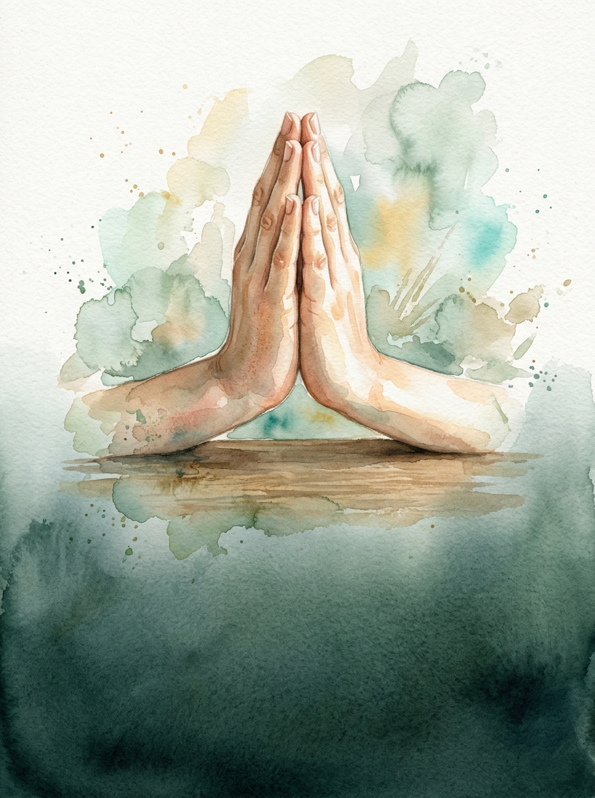

✦ Seolgyo AI
관유중앙교회
새 소식
쇼츠 · 구간 여러 개를 직접 골라 하나로
QT 11월호
범사에 감사하라 · 25일 묵상 무료 PDF
자료 만들기
설교를 업로드하면 카드뉴스, QT, 소그룹 나눔 등 11종 자료가 자동으로 만들어져요.
파일 업로드
파일을 드래그하거나 클릭하세요
한글, 워드, PDF · 최대 4.5MB · 500자 이상원고 붙여넣기
원고를 복사해서 바로 붙여넣으세요
텍스트 직접 입력 및 편집유튜브 링크
예배 전체 영상도 설교 부분만 찾아
자료를 만들어요최근 설교
내 자료 전체 보기 ›감사는 신앙이고 믿음입니다
기본
역대상 16:7-11 · 11월 6일
시련 속에서도 기쁨을 잃지 않는 인내의 삶
기본
야고보서 1:1-12 · 10월 30일
여호와께 감사하라! - 복의 근원이 되는 결단
기본
시편 138편 · 11월 3일
광야의 식탁을 베푸시는 하나님의 은혜
기본
시편 78장 17-25절 · 10월 27일
AI 사역 자료 완성
10종 목회 사역 자료 & 원문 대조 리포트
제목: "주일 예배 설교" · 본문: 성경 본문 · 타깃: 장년부 & 전체 (기본)
👥 구역·순·셀·목장 예배용 소그룹 나눔 질문지
마음 열기부터 말씀 묵상, 삶의 적용 및 합심 기도 제목까지 원클릭으로 복사하여 단톡방에 배포하세요.
☀️ 주간 QT 6일치 묵상 가이드 (월요일 ~ 토요일)
주일 본문을 절별로 깊이 묵상하며 성도들이 매일 삶에 적용할 수 있는 묵상집입니다.
🖼️ 인스타그램 감성 카드뉴스 7장
seolgyo-ai 비주얼 아트워크 엔진원사이트(seolgyo-ai.com)와 동일한 감성적인 크리스천 수채화 아트워크와 깔끔한 화이트 타이포그래피로 7장 카드뉴스를 생성합니다.

CARD 1 / 7
복의근원 관유중앙교회
빌립보서 4:6-7
염려를 기도로 바꾸라
세상이 줄 수 없는 하나님의 거룩한 평강과 회복의 메시지
✨ 복의근원 관유중앙교회 ✨
1 / 7
📱 7장 슬라이드 바로가기
(클릭 시 해당 카드로 즉시 전환)
1 / 7 슬라이드
📝 설교 요약 & 3대지 구조화 분석
서론, 본론(1·2·3대지), 결론과 삶의 적용을 한눈에 조망할 수 있는 구조화 리포트입니다.
💬 성도 주간 알림톡 & 단톡방 목회 서신
주일 저녁 또는 월요일 아침, 성도 단체 카톡방에 바로 복사하여 보낼 수 있는 은혜로운 알림톡입니다.
📜 주보 설교 요약란 & 주일 대표 기도문
교회 주보 인쇄용 500자 설교 요약문과 주일 예배용 대표 기도문 및 축도문입니다.
📄 캡컷(CapCut)·프리미어 프로 싱크 맞춤 쇼츠 자막 (SRT)
타임코드가 정밀하게 싱크된 표준 SRT 포맷입니다. 영상 편집 프로그램(CapCut, Premiere, Vrew)에 그대로 끌어놓거나 다운로드하세요.
⏱️ 설교 유튜브 타임스탬프 & 영상 더보기 설명란
설교 유튜브 영상의 더보기 설명란 및 고정 댓글에 복사하여 붙여넣으실 수 있는 챕터 타임라인과 바로가기 링크입니다.